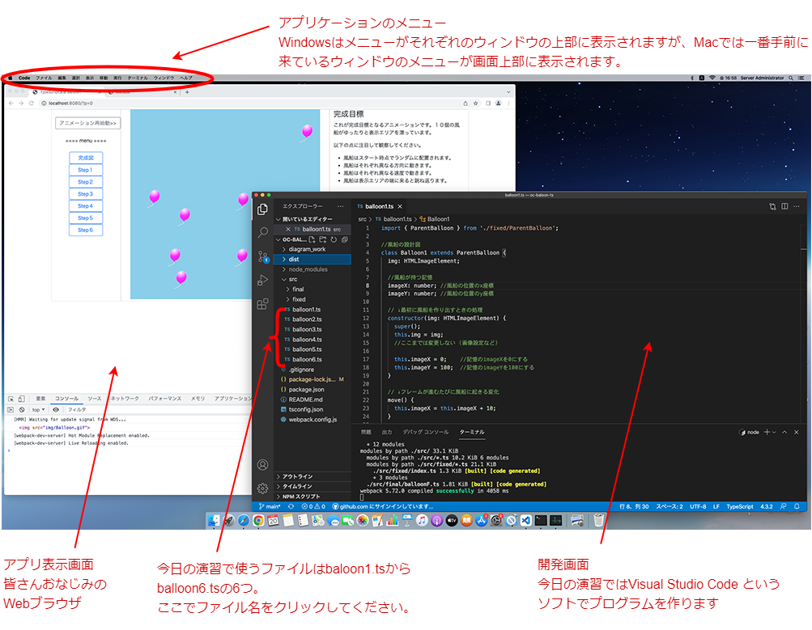
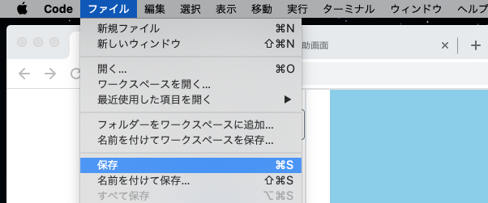
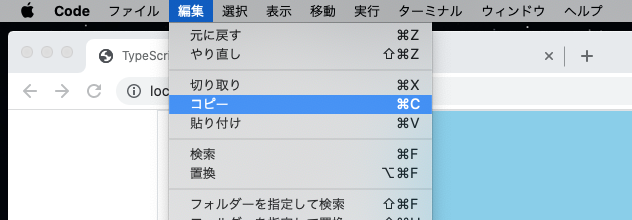

プログラムの変更をアプリ表示画面に反映
開発画面でプログラムを書き換えたら、ファイルを保存するとアプリ表示画面が更新されます。保存は、上部メニューの「ファイル」から「保存」をクリックしてください。
開発画面が手前に表示された状態にすることを忘れないでください。

コピー、ペースト機能の利用
Windowsと同様に、開発画面でコピー、ペースト機能が利用できます。開発画面でコピーしたい部分をマウスで選択したら、上部メニューの「編集」から「コピー」をクリックしてください。
貼り付けたい場所にカーソルを移動させ、上部メニューの「編集」から「貼り付け」をクリックしてください。
開発画面が手前に表示された状態にすることを忘れないでください。
